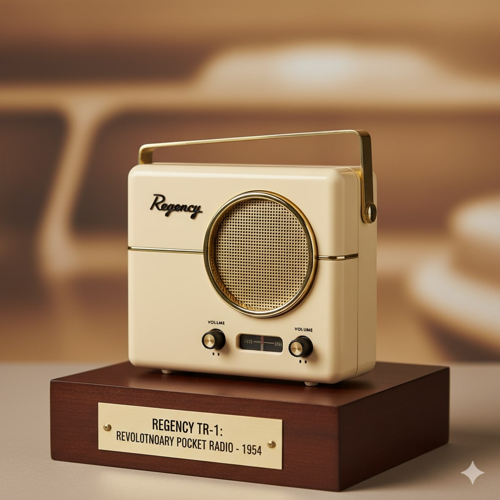
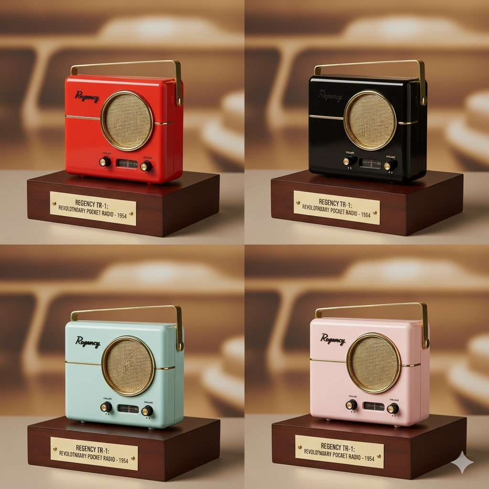

About Regency Radio Company
Pioneering the Future of Electronic Entertainment Since 1947
A Legacy of Innovation
Founded in 1947 by a group of visionary engineers and entrepreneurs, Regency Radio Company has been at the forefront of radio technology for nearly a decade. Our mission has always been simple: to bring the joy of high-quality radio entertainment to every American household.
Based in Dallas, Texas, Regency has grown from a small startup in a garage workshop to one of the nation's most trusted names in consumer electronics. We've built our reputation on three fundamental principles: innovation, quality, and customer service.
The development of the TR-1 transistor radio represents the culmination of years of research and development, partnerships with leading technology companies, and our commitment to making cutting-edge electronics accessible to everyday consumers.

Leadership Team
John W. Richardson
President & Chief Executive Officer
John founded Regency in 1947 with a vision to revolutionize home entertainment. A former Navy communications officer, he recognized the potential of emerging semiconductor technology long before others. Under his leadership, Regency has grown from a 5-person startup to a company employing over 500 people.
Dr. Margaret K. Chen
Chief Technology Officer
Dr. Chen brings over 15 years of experience in electronic engineering to Regency. A graduate of MIT with a PhD in Electrical Engineering, she led the research team that developed our breakthrough transistor circuit design. Her innovations have been instrumental in making the TR-1 both affordable and reliable.
Robert J. Williams
Vice President of Manufacturing
Robert oversees all aspects of Regency's production operations, ensuring that every TR-1 meets our exacting quality standards. With a background in industrial engineering and 20 years in consumer electronics manufacturing, he has streamlined our production process to deliver exceptional value to our customers.
Our Core Values
Innovation First
We constantly push the boundaries of what's possible in consumer electronics. Our team of engineers and researchers work tirelessly to develop technologies that improve people's lives.
Quality Without Compromise
Every Regency product undergoes rigorous testing and quality control. We believe our customers deserve products that work reliably for years, not months.
Customer Partnership
Our customers aren't just buyers - they're partners in our mission. We listen to feedback, respond to needs, and build products that truly serve their purposes.
American Craftsmanship
We're proud to design, engineer, and manufacture our products right here in America. This commitment to domestic production ensures quality control and supports American workers.
Our Journey
Company Founded
John W. Richardson establishes Regency Radio Company in a small Dallas garage with a team of three engineers.
First Product Line
Launch of our initial series of home radio receivers, establishing Regency as a serious competitor in the electronics market.
Manufacturing Expansion
Opening of our first dedicated manufacturing facility, allowing us to scale production and reduce costs for consumers.
Partnership with Texas Instruments
Strategic alliance with Texas Instruments to develop next-generation semiconductor-based electronics.
The TR-1 Revolution
Launch of the Regency TR-1, the world's first commercially available transistor radio, changing entertainment forever.
Our Partners
Regency's success is built on strong partnerships with industry leaders who share our commitment to innovation and quality.
Texas Instruments
Our primary partner in developing transistor technology. TI provides the high-quality germanium transistors that power the TR-1.
IDEF Corporation
Collaborative partner in circuit design and engineering consultation, helping us optimize the TR-1's performance.
American Electronics Association
Active member supporting the growth of American electronics manufacturing and innovation.
Community Involvement
🎓 Educational Support
Regency sponsors radio engineering programs at several universities and provides equipment grants to schools across the country.
Local Healthcare
We donate radio units to hospitals and nursing homes, helping patients stay connected to news and entertainment during their recovery.
Cultural Preservation
Support for local radio stations and community broadcasting helps preserve American musical and cultural heritage.
Veterans Programs
Special discounts for military veterans and active-duty personnel, honoring their service to our nation.
Join the Regency Team
Building the Future Together
At Regency, we're always looking for talented individuals who share our passion for innovation and quality. Whether you're an experienced engineer, a recent graduate, or someone with a unique perspective to offer, we encourage you to explore career opportunities with us.
Current Openings:
- Electronics Engineer - Dallas, TX
- Quality Control Technician - Dallas, TX
- Sales Representative - Multiple Cities
- Customer Service Representative - Dallas, TX
Benefits include: Competitive salary, comprehensive health insurance, retirement plans, paid vacation, and opportunities for advancement.
To apply, send your resume to careers@regencyradios.com or mail to our Dallas headquarters.

Investor Information
Regency Radio Company is currently privately held, but we're exploring opportunities to expand our operations and bring our innovative products to even more customers.
Revenue Growth
300% increase in annual revenue since 1947
Market Presence
Products sold in all 48 continental states
Employee Base
Over 500 skilled workers and professionals
Innovation Pipeline
3 new products in development for 1955
For investment inquiries, please contact our corporate office at investor@regencyradios.com
Corporate Contact Information
Headquarters
Regency Radio Company
1500 Innovation Drive
Dallas, TX 75201
Phone: (214) 555-0700
Fax: (214) 555-0701
Executive Contacts
President: John Richardson
Email: jrichardson@regencyradios.com
CTO: Dr. Margaret Chen
Email: mchen@regencyradios.com
Departments
Sales: sales@regencyradios.com
Support: support@regencyradios.com
Careers: careers@regencyradios.com
Press: press@regencyradios.com